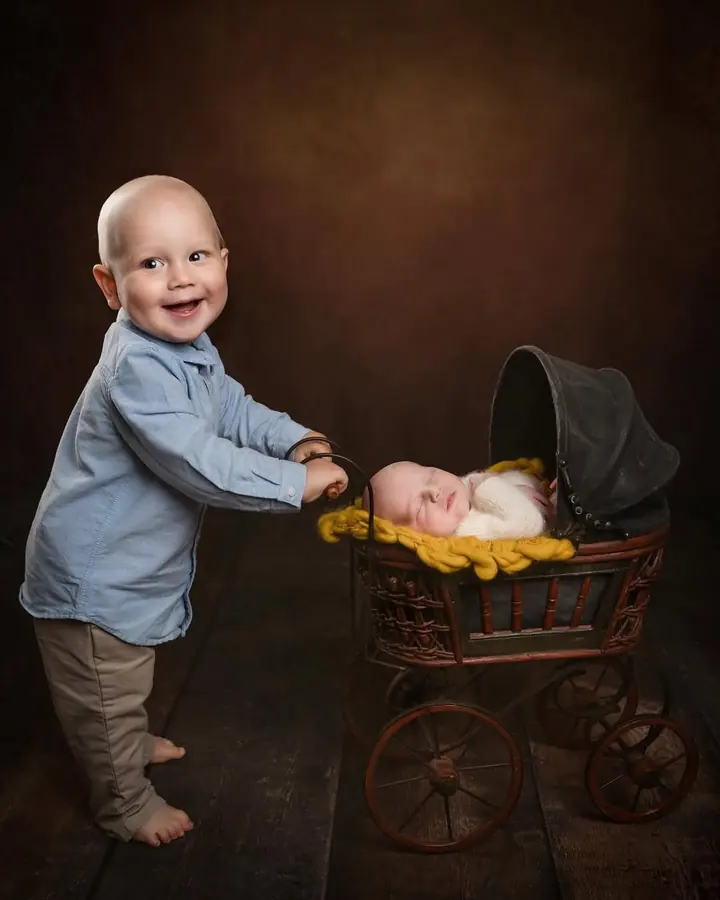
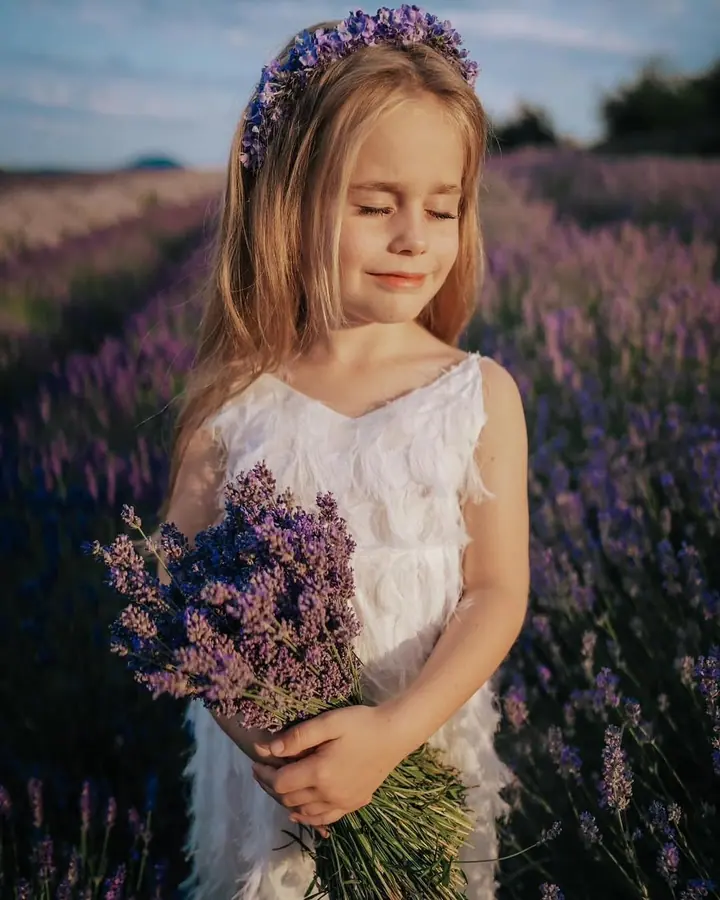
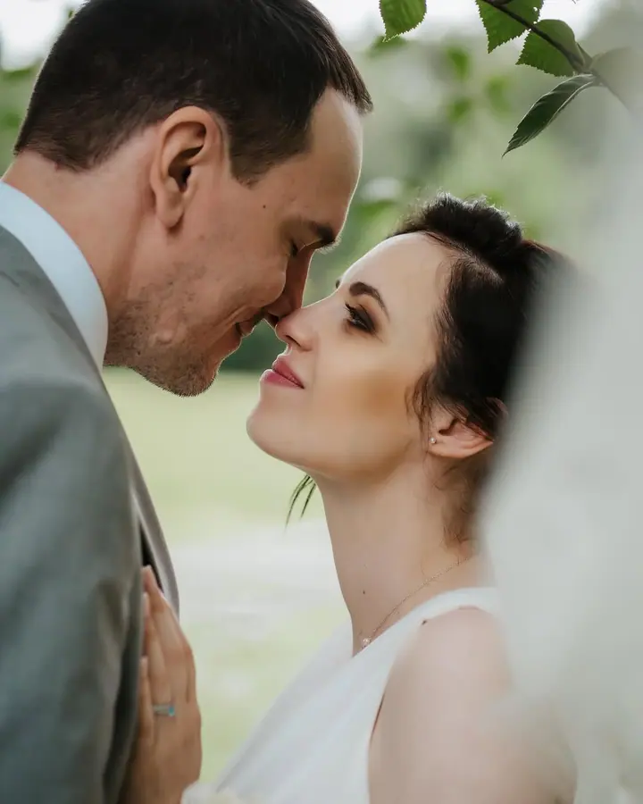

Rodinné focení a focení dětí
Fotíme ve studiu i venku a focení vždy přizpůsobíme věku dětí i vaší představě. Fotím ve dvojici s animátorkou, která se stará, aby se děti během focení bavily.

Jmenuji se Lucie Loučová a v našem ateliéru v Brandýse nad Labem fotím rodiny a děti, nastávající maminky i úplně malá miminka. Kromě toho mě baví stylizovaná focení se …
Rezervovat termínFotím v Ateliéru v Jízdárně v Brandýse nad Labem. Je to velké studio se stovkami šatů pro ženy, děti i miminka, takže se nemusíte trápit tím, co si vzít na sebe. Na focení nejsem sama: pomáhá mi asistentka, u rodinných focení animátorka, která se stará, aby se děti bavily, a před focením vás může nalíčit a učesat naše vizážistka.


Ráda fotím i venku. Nejraději v podvečer, kdy je nejhezčí světlo, v lese nebo v parku, a když je zataženo, u kapličky s alejí mezi poli nebo u rybníka. Nově můžeme fotit také v Toskánském skleníku na zámku v Brandýse, který je v době focení vyhrazený jen pro nás.
Kromě rodinných, těhotenských a novorozeneckých focení dělám i ženské focení a milkbath, svatby a filmová focení se zvířaty. Pro rodiny tvořím autorský generační portrét, který spojí portréty několika generací do jedné fotografie.
Co fotím
Fotíme ve studiu i venku a focení vždy přizpůsobíme věku dětí i vaší představě. Fotím ve dvojici s animátorkou, která se stará, aby se děti během focení bavily.
Ve studiu, venku v přírodě nebo v Toskánském skleníku na zámku v Brandýse. Těhotenské šaty, věnce i klobouky si můžete zapůjčit z mé sbírky.
Focení miminek v našem ateliéru s asistentkou a s možností profesionálního líčení pro maminku. Šaty si mohou zapůjčit i maminky a sourozenci miminka.
Filmová focení s koňmi, vlky (československý vlčák), liškou, dravci nebo veverkou. Spojení zvířat, přírody a příběhu.
Postup
Vyberte si typ focení, který je vám nejbližší, a zarezervujte termín. Pokud máte zájem o líčení, dejte nám vědět už při poptávce.
Poradíme vám s oblečením a pozadím, šaty si můžete zapůjčit z našeho šatníku. Přijeďte prosím asi 10 minut před termínem, ať máte čas na převlečení.
Fotíme ve studiu nebo venku a tempo přizpůsobíme vám i dětem. Animátorka se postará o dobrou náladu.
Po focení vám pošleme online galerii k výběru fotografií. Upravené fotky odevzdáváme do 4 týdnů od výběru a další je možné kdykoliv dokoupit.
Otázky
Většinou se fotí v posledním trimestru, ale je samozřejmě možné ho udělat i dříve. Partner i starší sourozenci jsou na focení vítáni.
Nemusíte. Ve studiu máme rozsáhlý šatník s šaty pro maminky, děti i miminka, k dispozici jsou také věnce a klobouky. Doporučujeme si jen přivézt vhodné spodní prádlo.
Ano, naše vizážistka vás před focením nalíčí a učeše přímo ve studiu v Brandýse za 1 400 Kč. Pomůže vám také s výběrem šatů.
Pejsek je vítán po předchozí domluvě, příplatek je 300 Kč.